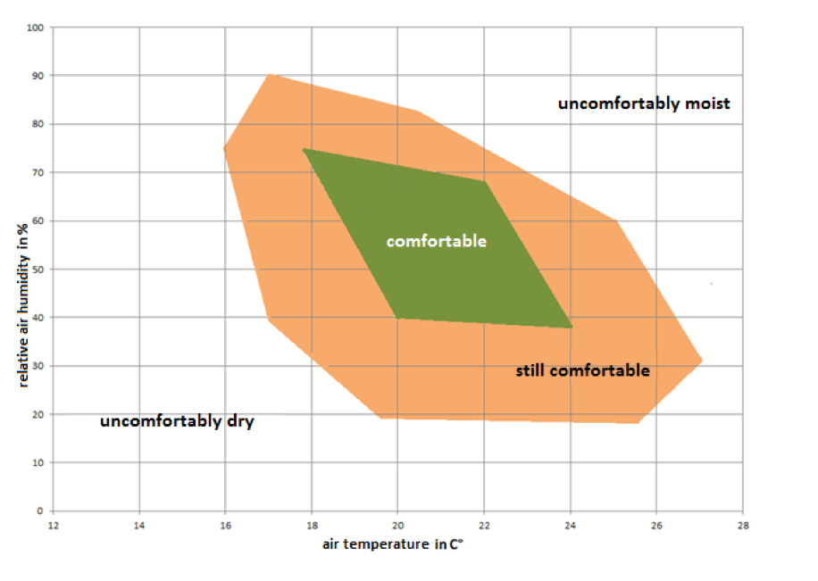

Condensatie
7 February, 2019
10:30
Samenvatting
Met het dauwpunt kunnen we bepalen hoe groot het risico van condensatie is.
In gewone leefruimten, is ruwweg een temperatuur van 20 graden Celsius en een relatieve luchtvochtigheid van ongeveer 50% comfortabel. In dat geval ligt het dauwpunt op 9 graden Celsius. Dus zowel wat koudere plekken (zeg 15 graden Celsius) in die ruimte als ook nachtverlaging (tot bijvoorbeeld 16 graden Celsius) geven geen aanleiding tot condensatie. Meting gedurende de maand januari laat zien dat het dauwpunt, ondanks dat nauwelijks is geventileerd, beneden de 5 Celsius ligt.
Ook voor koudere ruimten zeg bijvoorbeeld 10 graden Celsius, waar de luchtvochtigheid bijvoorbeeld 50% bedraagt, ligt het dauwpunt behoorlijk laag, in dit geval op 1 graad Celsius. In dit soort ruimten gaan we nog metingen verrichten om het vermoeden te bevestigen.
Voor ventilatie met WarmteTerugWinning (WTW) zullen we wel degelijk met condensatie rekening moeten houden . Immers 50% verzadigde lucht van 20 Celsius heeft een dauwpunt van 11 Celsiusen zak dus zeker gaan condenseren.
Verlaging Temperatuur
De relatie tussen temperatuur en luchtvochtigheid kan grafisch worden weergegeven met het Mollier-diagram zoals hieronder weergegeven. Deze curves zijn ook nog enigszins afhankelijk van de luchtdruk, maar dat effect is voor deze toepassing te verwaarlozen.
Om te bepalen wat de kans op condensatie is als in een gegeven situatie (temperatuur en relatieve vochtigheid) de temperatuur daalt (of als in bepaalde gedeelte van de ruimte koude plekken aanwezig zijn), moeten we in het Mollier-diagram het volgende doen om het dauwpunt (de temperatuur waarbij condensatie optreedt) te bepalen
Screen clipping taken: 07-Feb-19, 15:48
We zien dat bij een lagere luchtvochtigheid (een kromme rode lijn meer naar rechts) er een groter temperatuursverschil is tussen de actuele temperatuur en de dauwpunt temperatuur (hetgeen gevoelsmatig te verwachten was).
Comfort
Naast luchtkwaliteit is de combinatie van relatieve luchtvochtigheid en temperatuur van de lucht bepalend. Het comfort nivo is weergegeven in de figuur rechts. Hier wordt niet ingegaan op de verdeling van de temperatuur in de ruimte en eventuele stromingen die daar het gevolg van kunnen zijn.
Voor woongedeelten zien we dat, grofweg gezegd, de relatieve luchtvochtigheid ruwweg rond de 50% moet liggen. Als we nu het dauwpunt bepalen, bij een binnentemperatuur van 20 Celsius en de luchtvochtigheid variëren, dan krijgen we onderstaande tabel
Ruwweg kunnen we concluderen, dat het temperatuurverschil om tot condensatie te komen ongeveer 10 graden Celsius bedraagt. Dus zullen nachtverlaging met een graad of 4 en koude plekken in die ruimten nooit tot condensatie leiden. | 
|
Meting
Onderstaande meting is verricht in de woonkamer, met nauwelijks ventilatie, gedurende de maand januari in 2019 (Energy/Condensatie.ipynb).
We zien dat het dauwpunt beneden de 5 Celsius ligt en dus nooit een condensatie probleem kan veroorzaken.
Achtergrond Info
https://maken.wikiwijs.nl/userfiles/8f561d2c61bb29902306557f4d5855ac.pdf
https://wiki.groenkennisnet.nl/display/G2/2.2.2+Praktische+toepassingen+van+het+Psychrodiagram
Created with Microsoft Office OneNote 2007
One place for all your notes and information